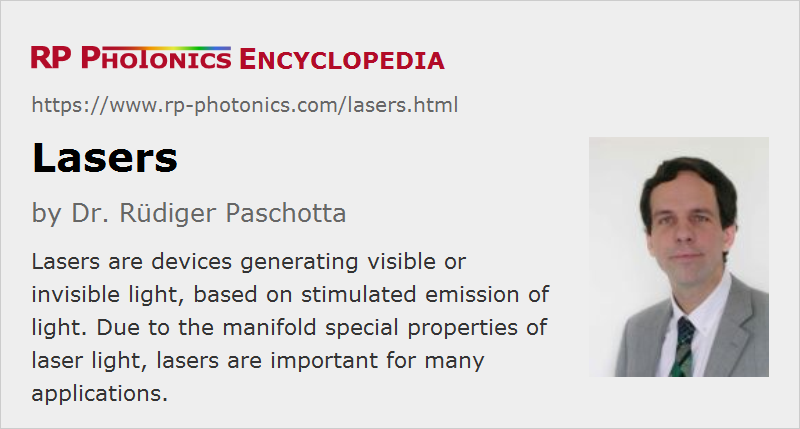

Lasers
Definition: devices generating visible or invisible light, based on stimulated emission of light
More general term: light sources
More specific terms: solid-state lasers, diode lasers, gas lasers, excimer lasers, radiation-balanced lasers, cryogenic lasers, visible lasers, eye-safe lasers, infrared lasers, ultraviolet lasers, X-ray lasers, bulk lasers, fiber lasers, dye lasers, upconversion lasers, free electron lasers, Raman lasers, high-power lasers, narrow-linewidth lasers, tunable lasers, pulsed lasers, ultrafast lasers, industrial lasers, scientific lasers, alignment lasers, medical lasers
German: Laser
How to cite the article; suggest additional literature
Author: Dr. Rüdiger Paschotta
“Laser” (rarely written as l.a.s.e.r.) is an acronym for “Light Amplification by Stimulated Emission of Radiation”, coined in 1957 by the laser pioneer Gordon Gould. Although this original meaning denotes an principle of operation (exploiting stimulated emission from excited atoms or ions), the term is now mostly used for devices generating light based on the laser principle. More specifically, one usually means laser oscillators, but sometimes also includes devices with laser amplifiers, also called master oscillator power amplifier (MOPA).
The first laser device was a pulsed ruby laser, demonstrated by Theodore Maiman in 1960 [2, 3]. In the same year, the first gas laser (a helium–neon laser [5]) and the first laser diode were made. Before this experimental work, Arthur Schawlow, Charles Hard Townes, Nikolay Basov and Alexander Prokhorov had published ground-breaking theoretical work on the operation principles of lasers, and a microwave amplifier and oscillator (maser) had been developed by Townes' group in 1953. The term “optical maser” (MASER = microwave amplification by stimulated amplification of radiation) was initially used, but later replaced with “laser”.
Laser technology is at the core of the wider area of photonics, essentially because laser light has a number of very special properties:
- It is usually emitted as a well directed laser beam which can propagate over long lengths without much divergence and can be focused to very small spots, where a high intensity is achieved.
- It can have a very narrow optical bandwidth, whereas e.g. most lamps emit light with a very broad optical spectrum.
- It may be emitted continuously, or alternatively in the form of short or ultrashort pulses, with durations from microseconds down to a few femtoseconds. The temporal concentration of energy – in addition to the potential of strong spatial confinement in a beam focus – allows for even far higher intensities to be generated.
These properties, which make laser light very interesting for a range of applications, are to a large extent the consequences of the very high degree of spatial and/or temporal coherence of laser radiation. The articles on laser light and laser applications give more details.
In laser technology, a wide range of optical components such as laser crystals, laser mirrors, polarizers, Faraday isolators and tunable optical filters are used; see the article on laser optics.
How a Laser Works
Basic Principle
A laser oscillator usually comprises an optical resonator (laser resonator, laser cavity) in which light can circulate (e.g. between two mirrors), and within this resonator a gain medium (e.g. a laser crystal), which serves to amplify the light. Without the gain medium, the circulating light would become weaker and weaker in each resonator round trip, because it experiences some losses, e.g. upon reflection at mirrors. However, the gain medium can amplify the circulating light, thus compensating the losses if the gain is high enough. The gain medium requires some external supply of energy – it needs to be “pumped”, e.g. by injecting light (optical pumping) or an electric current (electrical pumping → semiconductor lasers). The principle of laser amplification is stimulated emission.
A laser can not operate if the gain is smaller than the resonator losses; the device is then below the so-called laser threshold and only emits some luminescence light. Significant power output is achieved only for pump powers above the laser threshold, where the gain can reach the level of the resonator losses.
If the gain is larger than the losses, the power of the light in the laser resonator rises very rapidly, starting e.g. with low levels of light from fluorescence. Note that the resonator round-trip time is usually very small (e.g. a few nanoseconds, sometimes even much less), so that even a small net round-trip gain implies rapid exponential growth of the intracavity power. As high laser powers saturate the gain, the laser power will in the steady state reach a level so that the saturated gain just equals the resonator losses (→ gain clamping). Before reaching this steady state, a laser usually undergoes some relaxation oscillations. The threshold pump power is the pump power where the small-signal gain is just sufficient for lasing.
Some fraction of the light power circulating in the resonator is usually transmitted by a partially transparent mirror, the so-called output coupler mirror. The resulting beam constitutes the useful output of the laser. The transmission of the output coupler mirror can be optimized for maximum output power (see also: slope efficiency).
Coherence of Laser Radiation
A high degree of spatial coherence of the laser radiation can be achieved, essentially because the light emission is triggered (stimulated) by the intracavity radiation (i.e., the light is circulating in the laser resonator), rather than occurring spontaneously. In the stimulated emission process, the laser-active ions are made to emit light in the direction of already existing light, and also with the same optical phase. The resulting amplitude and phase profile of the laser beam is largely determined by the properties of the laser resonator, not by the laser gain medium.
Temporal coherence is a different issue, and it has completely different origins. Some laser gain media can emit light only in a narrow spectral range. Even if that is not the case, a laser often emits light only at a precisely defined wavelength or frequency, because the conditions are such that a net zero round-trip gain is possible only for that wavelength. A laser may be tuned to the exact wanted wavelength e.g. by using a tunable intracavity bandpass filter, such as a Lyot filter. Again, the mechanism of stimulated emission is of crucial importance: the laser-active ions can be made to emit at exactly the optical frequency of already existing light. The smaller the emission linewidth (i.e., the narrower the optical spectrum of emitted light), the higher the degree of temporal coherence.
Interestingly, even ultrashort pulses can exhibit a very high degree of temporal coherence, in that case involving coherence between subsequent pulses in a regular pulse train. This is related to the formation of a frequency comb as the optical spectrum.
Generation of Light Pulses
Some lasers are operated in a continuous fashion, whereas others generate pulses, which can be particularly intense. There are various methods for pulse generation with lasers, allowing the generation of pulses with durations of microseconds, nanoseconds, picoseconds, or even down a few femtoseconds (→ ultrashort pulses from mode-locked lasers). Often, a laser medium can accumulate some amount of energy over some “pumping” time in order to then release it within a much shorter time.
The optical bandwidth (or linewidth) of a continuously operating laser may be very small when only a single resonator mode can oscillate (→ single-frequency operation). In other cases, particularly for mode-locked lasers, the bandwidth can be very large – in extreme cases, it can span about a full octave. The center frequency of the laser radiation is typically near the frequency of maximum gain, but if the resonator losses are made frequency-dependent, the laser wavelength can be tuned within the range where sufficient gain is available. Some broadband gain media such as Ti:sapphire and Cr:ZnSe allow wavelength tuning over hundreds of nanometers.
Laser Noise
Due to various influences, the output of lasers always contains some noise in properties such as the output power or phase. For pulsed lasers, additional quantities can come into play, for example the timing jitter. For more details, see the article on laser noise.
Types of Lasers
Laser technology is a rather diverse field, utilizing a wide range of very different kinds of laser gain media, optical elements and techniques. Common types of lasers are:
- Semiconductor lasers (mostly laser diodes), electrically (or sometimes optically) pumped, efficiently generating very high output powers (but typically with poor beam quality), or low powers with good spatial properties (e.g. for application in CD and DVD players), or pulses (e.g. for telecom applications) with very high pulse repetition rates. Special types include quantum cascade lasers (for mid-infrared light) and surface-emitting semiconductor lasers (VCSELs and VECSELs), the latter also being suitable for pulse generation with high powers.
- Solid-state lasers based on ion-doped crystals or glasses (doped insulator lasers), pumped with discharge lamps or laser diodes, generating high output powers, or lower powers with very high beam quality, spectral purity and/or stability (e.g. for measurement purposes), or ultrashort pulses with picosecond or femtosecond durations. Common gain media are Nd:YAG, Nd:YVO4, Nd:YLF, Nd:glass, Yb:YAG, Yb:glass, Ti:sapphire, Cr:YAG and Cr:LiSAF. A special type of ion-doped glass lasers are:
- Fiber lasers, based on optical glass fibers which are doped with some laser-active ions in the fiber core. Fiber lasers can achieve extremely high output powers (up to kilowatts) with high beam quality, allow for widely wavelength-tunable operation, narrow linewidth operation, etc.
- Gas lasers (e.g. helium–neon lasers, CO2 lasers, and argon ion lasers) and excimer lasers, based on gases which are typically excited with electrical discharges. Frequently used gases include CO2, argon, krypton, and gas mixtures such as helium–neon. Common excimers are ArF, KrF, XeF, and F2. As far as gas molecules are involved in the laser process, such lasers are also called molecular lasers.
Less common are chemical and nuclear pumped lasers, free electron lasers, and X-ray lasers.
Laser Sources in a Wider Sense
There are some light sources which are not strictly lasers, but are nevertheless often called laser sources:
- In some cases, the term is used for amplifying devices emitting light without an input (excluding seeded amplifiers). An example are X-ray lasers, which are usually superluminescent sources, based on spontaneous emission followed by single-pass amplification. There is then no laser resonator. A similar situation occurs for optical parametric generators, where the amplification, however, is not based on stimulated emission; it is parametric amplification based on optical nonlinearities. Light from such devices can have laser-like properties, such as strongly directional emission, high spatial and temporal coherence and a narrow optical bandwidth.
- In other cases, the term laser sources is justified by the fact that the source contains a laser, among other components. This is the case for combinations of lasers and amplifiers (→ master oscillator power amplifier), and also for sources based on nonlinear frequency conversion of laser radiation, e.g. with frequency doublers or optical parametric oscillators.
Safety Aspects
The work with lasers can raise significant safety issues. Some of those are directly related to the laser light, in particular to the high optical intensities achievable, but there are also other hazards related to laser sources. See the article on laser safety for details.
Laser Applications
There is an enormously wide range of applications for a great variety of different laser devices. They are largely based on various special properties of laser light, many of which cannot be achieved with any other kind of light sources. See the article on laser applications for an overview.
On the other hand, many potential laser applications cannot be practically realized so far because lasers are relatively expensive to make – or more precisely, because they are so far mostly made with relatively expensive methods. Most lasers are fabricated in relatively small volumes and with a limited degree of automation. Another aspect is that lasers are relatively sensitive in various respects, for example concerning the precise alignment of optical components, mechanical vibrations and dust particles. Therefore, there is ongoing research and development for finding more cost-effective and robust solutions.
For business success, it is often vital not just to develop lasers with high performance and low cost, but also to identify the best suited applications, or develop lasers which are best suited for particular applications. Also, the knowledge of the application details can be very important. For example, in laser material processing it is vital to know the exact requirements in terms of laser wavelength, beam quality, pulse energy, pulse duration etc. for optimum processing results.
Suppliers
The RP Photonics Buyer's Guide contains 259 suppliers for lasers. Among them:
Questions and Comments from Users
Here you can submit questions and comments. As far as they get accepted by the author, they will appear above this paragraph together with the author’s answer. The author will decide on acceptance based on certain criteria. Essentially, the issue must be of sufficiently broad interest.
Please do not enter personal data here; we would otherwise delete it soon. (See also our privacy declaration.) If you wish to receive personal feedback or consultancy from the author, please contact him e.g. via e-mail.
By submitting the information, you give your consent to the potential publication of your inputs on our website according to our rules. (If you later retract your consent, we will delete those inputs.) As your inputs are first reviewed by the author, they may be published with some delay.
Bibliography
| [1] | A. L. Schawlow and C. H. Townes, “Infrared and optical masers”, Phys. Rev. 112 (6), 1940 (1958), doi:10.1103/PhysRev.112.1940 (ground-breaking work; also contains the famous Schawlow–Townes equation) |
| [2] | T. H. Maiman, “Stimulated optical radiation in ruby”, Nature 187, 493 (1960), doi:10.1038/187493a0 (first experimental demonstration of a laser), doi:10.1038/187493a0 |
| [3] | T. H. Maiman, “Optical maser action in ruby”, Br. Commun. Electron. 7, 674 (1960) |
| [4] | P. P. Sorokin and M. J. Stevenson, “Stimulated infrared emission from trivalent uranium”, Phys. Rev. Lett. 5 (12), 557 (1960), doi:10.1103/PhysRevLett.5.557 (the first four-level laser) |
| [5] | A. Javan, W. R. Bennett Jr., and D. R. Herriott, “Population inversion and continuous optical maser oscillation in a gas discharge containing a He–Ne mixture”, Phys. Rev. Lett. 6 (3), 106 (1961), doi:10.1103/PhysRevLett.6.106 |
| [6] | G. Smith, “The early laser years at Hughes Aircraft Company”, IEEE J. Quantum Electron. 20 (6), 577 (1984), doi:10.1109/JQE.1984.1072445 |
| [7] | R. E. Slusher, “Laser technology”, Rev. Mod. Phys. 71, S471 (1999), doi:10.1103/RevModPhys.71.S471 |
| [8] | J. M. Gill, “Lasers: a 40-year perspective”, IEEE J. Quantum Electron. 6 (6), 1111 (2000), doi:10.1109/2944.902159 |
| [9] | "Bright idea: the first lasers", American Institute of Physics (2010) |
| [10] | J. Hecht, “Short history of laser development”, Opt. Eng. 49, 091002 (2010), doi:10.1364/AO.49.000F99 |
| [11] | A. E. Siegman, Lasers, University Science Books, Mill Valley, CA (1986) |
| [12] | O. Svelto, Principles of Lasers, Plenum Press, New York (1998) |
| [13] | F. Träger (ed.), Handbook of Lasers and Optics, Springer, Berlin (2007) |
| [14] | R. Paschotta, Field Guide to Lasers, SPIE Press, Bellingham, WA (2007) |
See also: laser light, laser optics, laser applications, laser physics, laser design, laser resonators, laser crystals, gain media, diode-pumped lasers, lamp-pumped lasers, solid-state lasers, fiber lasers, waveguide lasers, upconversion lasers, semiconductor lasers, gas lasers, molecular lasers, X-ray lasers, mode-locked lasers, Q-switched lasers, visible lasers, laser threshold, slope efficiency, laser noise, linewidth, coherence, wavelength tuning, laser safety, laser specifications, scientific lasers
and other articles in the category lasers

This encyclopedia is authored by Dr. Rüdiger Paschotta, the founder and executive of RP Photonics Consulting GmbH. How about a tailored training course from this distinguished expert at your location? Contact RP Photonics to find out how his technical consulting services (e.g. product designs, problem solving, independent evaluations, training) and software could become very valuable for your business!
|  |
If you like this page, please share the link with your friends and colleagues, e.g. via social media:
These sharing buttons are implemented in a privacy-friendly way!